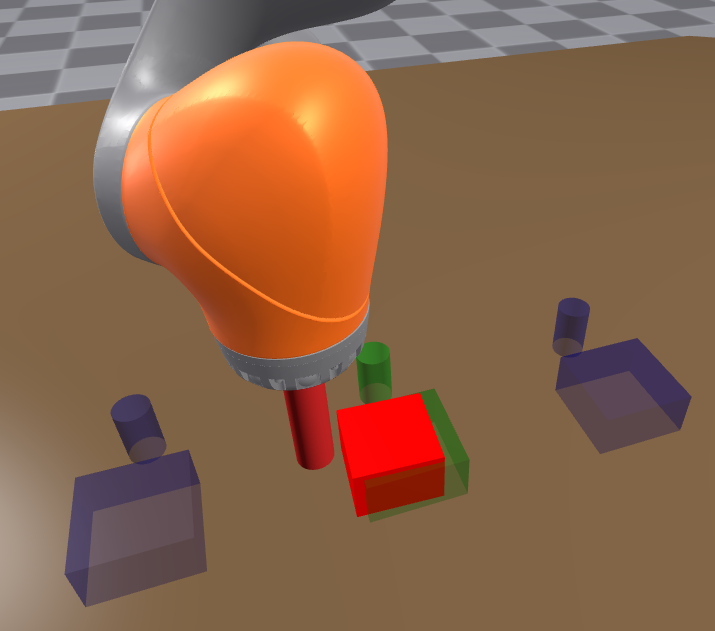
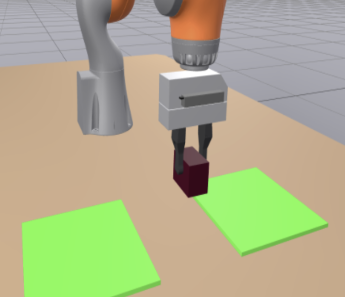
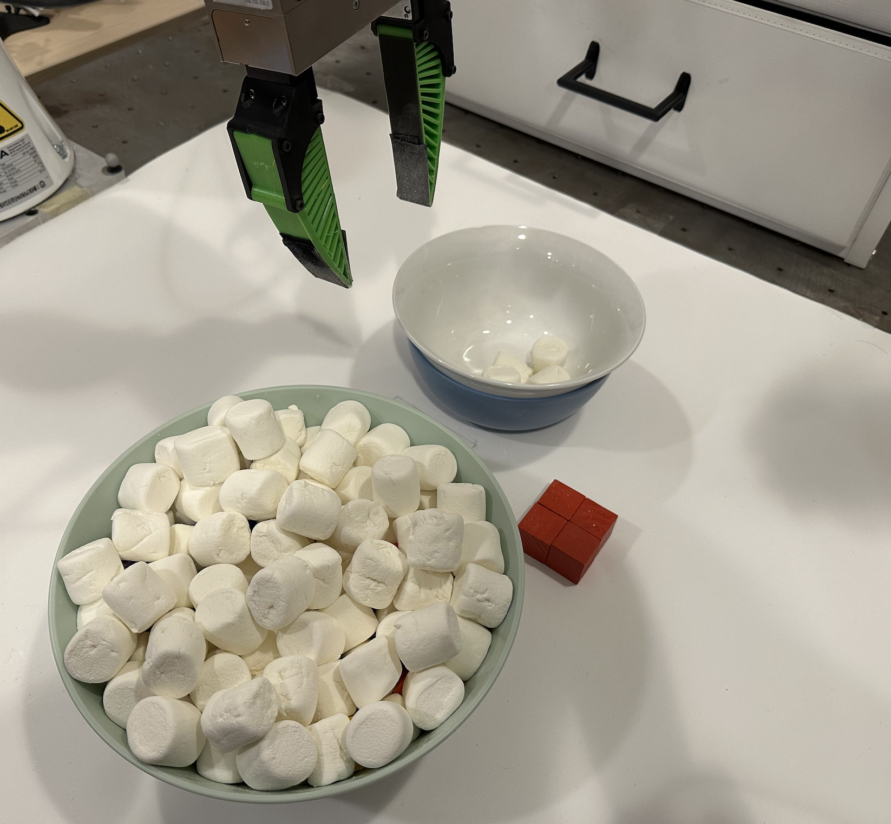

A. Overview
Diffusion Policy is a state-of-the-art behavior cloning method introduced by Chi et al. (2024), which learns the observation-conditional action distribution by minimizing the action prediction loss
where αk and σk are parameters related to the diffusion noise schedule (k represents the diffusion timestep). Essentially, the model learns to regress over noisy versions of action chunks from observation and diffusion timestep input, and at inference time uses a denoiser to conditionally sample from the action chunk distribution.
Diffusion Policy is implemented through a combination of observation encoder and action denoising backbone. As a summary: each camera c produces an image stream comprising To images. For each stream, an image encoder converts each of these images into latent embeddings. Note that the same vision backbone is used for all timesteps for each camera stream. These embeddings, concatenated with the diffusion timestep embedding and robot proprioception, are passed to the downstream model for conditioning. Common choices for the downstream conditioning model are UNet and DiT. Various methods like FiLM (Perez et al., 2017) and cross-attention can be applied to merge the conditioning with the denoiser.
We choose ResNet18 (He et al., 2015) as our image embedding backbone. Unless noted otherwise in the specific sections, the ResNet18 version from robomimic (Mandlekar et al.) is trained from scratch for our policies, with random weight initialization.
B. Comparison of Diffusion Policy Architectures
Diffusion Policy was presented with the UNet+FiLM and DiT architectures in the original work. For single-task RGB policies with short context lengths, UNet+FiLM outperformed the DiT model for the given design choices and hyperparameters. Therefore, it became the choice for many works building on diffusion policy. In this work, we suggest using UNet+Cross-Attention as the method for training single-task long-context diffusion policies from scratch in the limited-data regime.
As an assistance to the reader, we now provide an overview of the 3 methods. All methods involve passing observation inputs through an encoder that is shared across timesteps, but is often different for cameras (though it can be the same). After that, each observation embedding is concatenated with the corresponding proprioception information. The 3 architectures compared in this work differ in flow beyond this point:
- UNet+FiLM: The observation embeddings from each timestep and each camera are concatenated into one long vector. A diffusion timestep embedding is further concatenated to this. The action denoising backbone is made of a UNet with intermediate 1D convolution layers. The long vector is projected to dimensions matching these layers through separate MLPs, and merged via FiLM, where a scale and bias are both applied.
- UNet+Cross-Attention: The observation embeddings from each timestep are concatenated across cameras and proprioception, but remain separate for different timesteps. Diffusion time embedding is projected to matching dimension. A position encoding is added. Each of these embeddings is then individually projected to intermediate UNet layer dimensions, and cross-attended to with the intermediate UNet layers.
- DiT: The action denoising backbone is now provided by transformer decoder layers as opposed to UNet. Conditioning is merged via cross-attention.
We note that the DiT model from the original work, as well as from key long-context learning work from Torne et al. (2025), uses hyperparameters which result in a model significantly smaller in size than other choices. If we use their hyperparameters, we notice extremely low success rates in some tasks even with short context lengths. Very specifically, we notice reasonable performance on robomimic tasks, but almost catastrophic performance on tasks implemented in Drake. We therefore add more decoder layers, providing the model a number of parameters similar in magnitude to the other architectures we have used.
Moreover, a key change in our experiments for DiT is not using causal attention within the action chunk. Both Chi et al. (2024) and Torne et al. (2025) apply causal attention within an action chunk as it is denoised (so earlier elements of the action chunk cannot be influenced by later elements). We remove this flag, to make the flow of information more comparable to that of the UNet. Finally, we evaluate the DiT with additional steps of sampling compared to the UNet models, to eliminate the possibility of sampling error driving the difference in performance.
Finally, while we have not seen this in robotics policies, merging conditioning via cross-attention instead of FiLM has been used in computer vision before (Rombach et al., 2022).
C. Training Details and Hyperparameters
C.1 Checkpoint Selection
We designate a maximum number of training steps for each task based on approximate policy performance to convergence for short-context policies at N training trajectories. We then train policies with all context lengths for that task to those many training steps, saving the top 5 checkpoints with respect to validation loss, the top 5 checkpoints with respect to action-matching validation loss, and 3 evenly spaced checkpoints toward the end of training. We then evaluate each checkpoint, and the highest success rate among checkpoints is reported as the success rate for the training run. For our hardware evaluation on the marshmallows task, we simply use the latest checkpoint.
We train all push-T policies for 150k steps; marshmallows, square,
lift, and push-and-return policies for 200k steps; and grasp-and-return
policies for 100k steps. We start with a learning rate of 1e-4 and use
cosine decay. For some policies (like UNet+FiLM and UNet+Cross-Attention
on push-T, and UNet+FiLM on push-and-return), we only save the latest
checkpoint as opposed to 3 recent toward the end, because the results are largely insensitive to
this choice and we did not rerun these configurations due to the high computational cost. We did
rerun it for the N data regime in push-and-return for
UNet+FiLM, and found the presented trends to be consistent.
We notice in our work that policies with different context lengths can sometimes converge in a different number of training steps. For instance, we usually notice that especially with N/2 trajectories, some policies often converge slightly sooner than those for N and 2N — an effect that is more pronounced at longer context lengths. We believe earlier checkpoints at longer context lengths in the low data regime help mitigate the impact of over-fitting.
Each reported success rate is from one training run. While we do account for uncertainty in the binary task success, we do not, in this work, account for uncertainty in training randomness. Due to limited availability of resources and the high amount of training time needed to produce a study of this magnitude, such a choice is consistent with prior work.
C.2 Hyperparameters
In Table 1 we present the hyperparameters used for the main results. By design, FiLM conditioning model size changes considerably as context length is increased. On the contrary, UNet+Cross-Attention and DiT have similar model sizes across context lengths due to the manner of applying conditioning. We choose the size of the cross-attention model to be roughly halfway between the smallest and largest used FiLM model. For DiT, we get a model comparable in size to the cross-attention model after adding significantly more layers.
| UNet+FiLM | UNet+xAttn | DiT | |
|---|---|---|---|
| Denoiser core | |||
| Conditioning mechanism | FiLM (global) | Cross-attention (token seq.) | Cross-attention (token seq.) |
| UNet down channels | [256, 512, 1024] | [256, 512, 1024] | – |
| Conv kernel size | 5 | 5 | – |
| GroupNorm groups | 8 | 8 | – |
| Approximate parameter counts | |||
| Denoiser parameters | ≈67M at hy=2 to ≈212M at hy=80 | ≈129M | ≈109M |
| Encoder parameters | 22.4M | 22.4M | 22.4M |
| Total parameters | ≈89M at hy=2 to ≈235M at hy=80 | 151M | 131M |
Task-specific hyperparameters are available in Table 2. Each task differs in image resolution, crop size, action dimensionality, the set of observation horizons we sweep, the number of training demonstrations used, and the total number of training steps. Total training steps are matched between baselines and ablations to ensure a fair comparison.
Our models are designed such that the time dimension of the trajectory being denoised needs to be a multiple of 4. We select a total denoising horizon such that the length of the predicted future is roughly 16 while retaining full past action prediction and having the total length a multiple of 4. Thus, for context length 1 our horizon is 16; for 2 it is also 16; for context length 5 it is 20; and for context length 10 it is 24. If the context length is a multiple of 4, the horizon is simply context length + 16.
| Setting | Push-T | Push-and-return | Grasp-and-return | Marshmallows (hardware) | Square (robomimic) | Lift (robomimic) |
|---|---|---|---|---|---|---|
| Image input (H×W) | 128×128 | 128×128 | 128×128 | 128×128 | 84×84 | 84×84 |
| Crop (H×W) | 112×112 | 112×112 | 112×112 | 112×112 | 76×76 | 76×76 |
| Cameras | overhead, wrist | overhead, wrist | overhead, wrist | overhead, wrist | agentview, eye-in-hand | agentview, eye-in-hand |
| Proprioception dim | 3 | 2 | 13 | 13 | 9 | 9 |
| Action dim | 2 | 2 | 13 | 13 | 10 | 10 |
| Context length swept (hy) | 1, 2, 5, 10, 12, 16, 20 | 4, 8, 32, 60, 72, 80 | 4, 8, 16, 20, 24, 48 | 92 | 1, 2, 5, 10, 12, 16, 20 | 1, 2, 5, 10, 12, 16, 20 |
| Future chunk length hu | hy+14 to hy+16 | hy+16 | hy+16 | hy+16 | hy+14 to hy+16 | hy+14 to hy+16 |
| Data (low / usual / high) | 80 / 160 / 320 | 24 / 48 / 96 | 12 / 24 / 48 | 100 | 50 / 100 / 200 | 25 / 50 / 100 |
| Total training steps | 1.5×105 | 2×105 | 1×105 | 2×105 | 2×105 | 2×105 |
While this is an accurate tabular representation, the policy design involves many more hyperparameters which cannot be best captured in this manner. We therefore refer the reader to the codebase for the updated and most accurate configuration files corresponding to our experiments.
D. Training Data per Task
The value of N used for each task is indicated in Table 3. We then present further details about data collection and evaluation for all the tasks.
| Task | Value of N |
|---|---|
| push-T | 160 |
| robomimic square | 100 |
| robomimic lift | 50 |
| push-and-return | 48 |
| grasp-and-return | 24 |
| marshmallows | 100 |



E. Task and Data Collection Descriptions
Push-T: Observations are images (from pixels) and robot proprioception, whereas actions are a chunk of the next planar location of the cylindrical end effector. The dataset for this task was collected using teleoperation. We choose N = 160.
Robomimic tasks: We use the proficient human dataset. Further details on the environments are available via robomimic. We choose N = 100 for square and N = 50 for lift.
Push-and-return: Observation and action space are the same as defined above for push-T. We collect data for this task via teleoperation in simulation. For each mode, we collect two datasets: (i) by randomly initializing the block in that location and completing the task via teleoperation, and (ii) by mirroring tele-operated roll-outs from the symmetrically opposite mode. This allows us to ensure coherent data across symmetric modes, and eliminate inconsistent teleoperation as a source of learning discrepancy. We use a two-mode version for all the demonstrated comparisons and leave it to future work to evaluate the same task with more return modes. Such a future experiment can provide insight on increasing combinatorial complexity while keeping local complexity the same. We choose N = 48.
Grasp-and-return: Observations remain the same as in push-and-return, but the action is now 6-DOF end-effector pose as opposed to planar location as in previous cases. Data for this task is generated in simulation using a heuristic method. We choose N = 24.
Marshmallows: This task requires moving two handfuls of marshmallows to a target bowl from a supply bowl, and then signaling task completion by pressing a button (we represent this by the gripper closing and reaching a small platform of red blocks). We adapt this task on our hardware from Mark et al. (2026), who in turn adapted it from a task in Torne et al. (2025). We collect data using teleoperation via VR. Observations are provided via one overhead camera and one wrist camera. Action space is the same as in grasp-and-return. We choose N = 100.
F. Evaluation Details
Reported success rates are out of 200 trials for simulated tasks, with error bars representing 95% Wilson score confidence intervals.
Push-T: Specific evaluation details for this task are based on prior work.
Push-and-return: In the 2-mode case, we conduct 100 trials with the block originating on either side. The time limit is set to 50 s. The block is considered moved to the middle and back to either location if it overlaps by more than 95% of its area with the marker for that location.
Grasp-and-return: We conduct 100 trials with the brick originating on either side. The brick is considered moved to the center if it makes contact with the table space between the mats on either side. The brick is considered returned to a location if it is returned to anywhere on the mat from which it originated.
Marshmallows: We conduct 20 trials on hardware. The number of marshmallows at the start of the task in the target bowl can be arbitrary (consistent with data collection, and makes the task challenging in terms of memory).